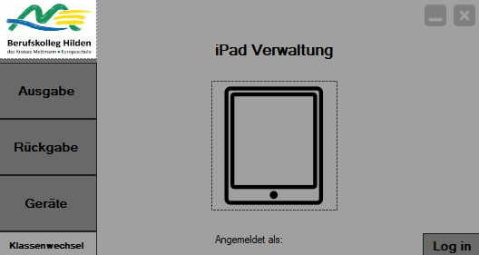

Projekt iPad Management is a Windows application developed to streamline the management and distribution of iPads to students at Berufskolleg Hilden. This application simplifies the process of issuing and returning devices, ensuring accurate record-keeping and reducing administrative workload.

Key Features:
- iPad Management: Facilitates the issuance, return, and tracking of iPads for students, managed by class teachers.
- Loan and Return Process: Devices are assigned to students during the loan process, with return dates and condition reports recorded upon return.
- Signature Tracking: Students sign for devices on a loan slip, ensuring accountability and accurate documentation.
- Damage Reporting: Supports logging of typical damages (e.g., “scratched screen”) with options for custom damage descriptions.
- Class Transfers: Automatically transfers device management to the new class teacher if a student switches classes.
- Database Integration: All records are stored in an MS Access database, ensuring easy data retrieval and reporting.
Technical Specifications:
- Development Environment: Developed using C# with Windows Forms for intuitive and user-friendly graphical interfaces.
- Database: Integrated with MS Access to store and manage device data securely.
- Platform: Windows – Optimized for desktop use, targeting educational institutions for device management.
- Security: Ensures data protection and restricts access to authorized personnel for issuing and returning devices.
- User Management: Managed by class teachers, simplifying the distribution process and ensuring organized tracking of each device.
- Reporting: Generates detailed reports on iPad loan status, return conditions, and repair requirements.
How It Works:
- Teachers assign iPads to students during the loan process and record device details.
- Devices are reset by students before returning them, ensuring they are ready for the next user.
- Teachers log device condition, return dates, and report any damages in the system.
- Students switching classes automatically transfer to the new teacher's management for continued tracking.